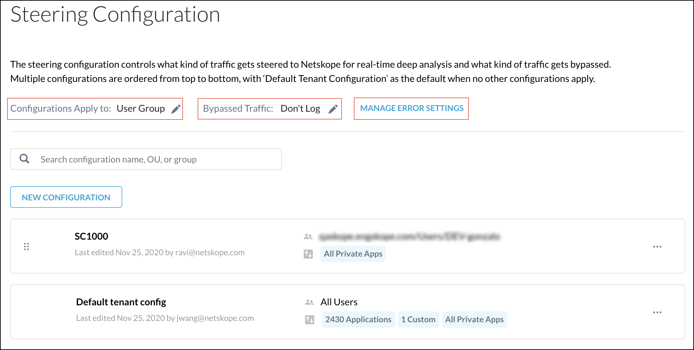
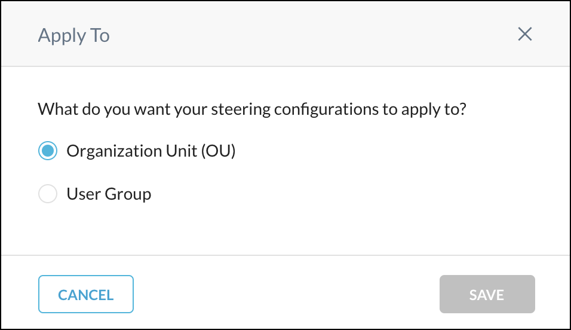
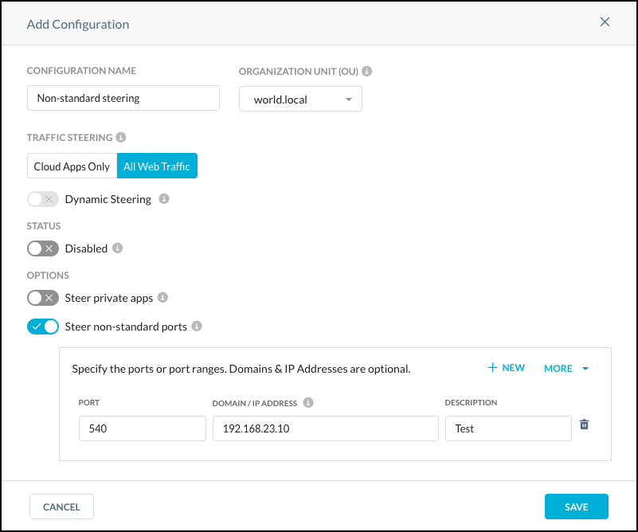
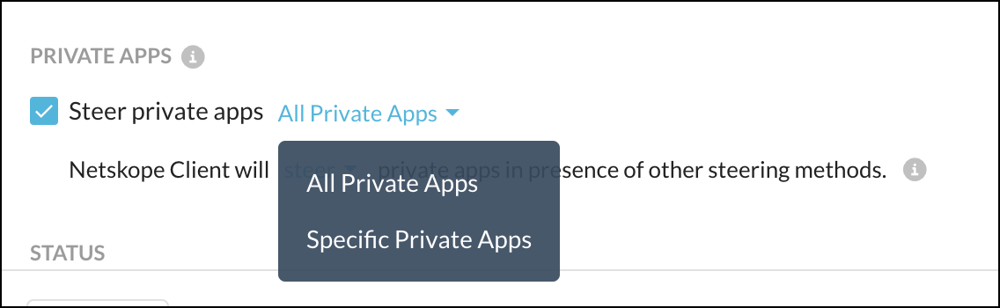

Steering Configuration
A Steering Configuration is responsible for directing traffic from end-users to the Netskope Cloud. A Netskope tenant steers thousands of apps by default, but to ensure the correct traffic (cloud apps only or all web traffic) is steered, modify the default steering configuration, or create a steering configuration; these configurations can be assigned to user groups or Organizational Units (OUs) to allow granular steering within an organization.
Steering configurations have two traffic types: Cloud Apps Only or All Web Traffic. Cloud Apps Only is the default in a new tenant. For legacy tenants, the existing steering configuration type(s) will be kept.
Create a Steering Configuration
To create a new steering configuration:
Add a new steering configuration. For cloud applications only, you must specify the apps to steer for a given Organization Unit (OU) or User Group to complete the configuration.
Specify exceptions, if any, that need to be bypassed from Netskope.
Ensure that error settings match your expectations.
There is no limit to the number of steering configurations you can have, but all configurations must be either OU or User Groups type configurations, not a mix of the two. The steering configuration on the top of the page takes priority over the other configurations listed below. To change the order of priority, simply select the icon to the left of the steering configuration, and then drag and drop the configuration up and down the page.
Note
The order of User Groups steering configurations determines what's used to resolve conflicts if a user is a member of multiple groups. The first group shown determines the group steering configuration when there is a group conflict. Conflict resolution is applicable only to User Groups.
Also, in a multi-user deployment mode, if the logged in users belongs to different OUs or User Groups, the Client will apply the steering config corresponding to the most recently logged in user. Make sure all the users belong to a single OU or User Group for a multi-user machine.
For users in OUs or User Groups that are not included in a custom configuration, the default tenant steering configuration is applied. If you want to steer different types of traffic for different OUs or User Groups, create multiple new steering configurations.
Requirements to use a steering configuration feature are:
You must be using version 70 or later of the Netskope Client to configure both types of steering modes (Cloud Apps Only or All Web Traffic) in a steering configuration.
Tip
If you want to steer private apps, using version 82 of the Client is recommended.
Netskope Secure Web Gateway (All Web Traffic type) in the steering configuration is a separately licensed product. Contact your sales rep to get this feature. For more information, refer to: .
Factor that steering configurations apply to all platforms, but OU and Group settings are applied to the Netskope Client only.
The Netskope Client offers comprehensive coverage when installed on managed devices, and provides visibility and policy enforcement for devices that are both on-premises and remote (off-network). The Netskope Client also:
Performs posture checks for devices to be classified as managed or unmanaged based on admin-defined configurations.
Detects if a user is on-premises or remote and applies different steering configurations based on the location.
Provisions Certificates to help with User Identification when used with another steering method (such as GRE or IPSec).
Detects the presence of other steering methods.
Generates user-facing notifications for Security Policy violations.
Consider these factors when creating and editing a steering configurations:
Creating a new steering configuration: You can enable Dynamic Steering when creating a steering configuration, and the default Exceptions are populated in both, on- and off-premises configurations.
Editing a configuration steering All Web Traffic:
When you edit a steering configuration to enable Dynamic Steering, the off-premises configuration, which is All Web Traffic by default, will inherit the exceptions.
An on-premises configuration, which is Cloud Apps Only by default, does not inherit the exceptions, with the assumption you create exceptions differently when a user is on-prem.
If you decide to no longer use Dynamic Steering, Netskope preserves the steering configuration based on the traffic type.
Editing a configuration steering Cloud Apps Only:
When you edit this steering configuration to enable Dynamic Steering, the on-premises configuration, which is Cloud Apps Only by default, will inherit the exceptions.
An off-premises configuration, which is All Web Traffic by default, does not inherit the exceptions, with the assumption you create exceptions differently when a user is off-prem.
If you decide to no longer use Dynamic Steering, Netskope preserves the steering configuration based on the traffic type.
Editing the default tenant config: There is no Restore Defaults capability, so you will need to create exceptions (in on-premises or off-premises mode, based on where you started before enabling Dynamic Steering).
To create a new steering configuration:
Go to Settings > Security Cloud Platform > Traffic Steering > Steering Configuration to open the Steering Configuration page.
 The Steering Configuration page has three settings options:
Configuration Applies To: Shows if you are using OUs or User Groups to steer traffic. To change this setting, click the pencil icon to open this dialog, enable the toggle for OU or User Group, and then click Save.
 Bypassed Traffic: Shows if you are logging bypassed traffic. To change this setting, click the pencil icon to open this dialog, enable the toggle for Log or Do Not Log, and then click Save.

Error Settings: Shows how certain errors are handled using either block or bypass. For more information, refer to Error Settings.
Click New Configuration. The Traffic Steering tab opens by default.
 Enter a name for the steering configuration.
Search for and select an OU or User Group from the dropdown list.
Tip
If you do not intend to use Dynamic Steering, jump to the step 6. Otherwise, proceed to step 5.
Dynamic Steering: When enabled, the Netskope Client uses On-Premises Detection to determine if the Client is on-premises or off-premises. If you do not intend to use Dynamic Steering, jump to the step 6. If so, proceed here.
To use Dynamic Steering, On-Premises Detection needs to be enabled in your Client Configuration (Settings > Security Cloud Platform > Devices > Client Configurations).
Note
Dynamic Steering can only be used for the OU and User Groups that are configured in your Client configuration.
When Dynamic Steering is enabled, the On-premises and Off-premises settings appear here. You have the option to steer traffic for older Clients through the On-Premises or Off-Premises configurations. Choose your preference in the dropdown list.

By default, the On-Premises configuration steers Cloud Apps only and the Off-Premises configuration steers All Web Traffic. To use All Web Traffic for both On and Off-Premises configurations, contact your Sales rep to enable this feature.
Both On-Premises and Off-Premises configurations for Dynamic Steering allow you to steer private apps.

When you enable Steer Private Apps, you have the option to steer All Private Apps or Specific Private Apps. Version 82 of the Client is required to steer specific private apps.

If you prefer to steer specific private apps, select this option. For example, If your existing VPN is active and allows access to all on-premises apps in your private datacenter, you could deselect those apps and only select apps hosted in AWS, Azure, or GCP. This would allow your existing VPN to provide access to on-premises apps, but Netskope Private Access would be used to access apps in the public cloud.
When you are finished creating this steering configuration, go to Settings > Security Cloud Platform > App Definitions to specify which private apps are steered with this configuration. Click the Private Apps tab, and then click the menu icon
 for the private app.
for the private app.
Click Select Steering Config and choose a steering config for the app. When finished, click Save.

After you have completed setting up Dynamic Steering, jump to step 8.
When Dynamic Steering is disabled, you need to select Cloud Apps Only or All Web Traffic.

When Dynamic Steering is disabled, you can still Steer Private Apps. For Cloud Apps that are in an on-premises network, consider disabling the Steer Private Apps option so that users are not steered through Netskope Private Access. For Cloud Apps that are off-premises or All Web Traffic, enable this option to steer traffic through Netskope Private Access.
There is a not steer or steer dropdown toggle for the Netskope Client for when other steering modes are present, like GRE, IPSec, and Explicit Proxy. This only applies to Private Apps.

To steer private apps, enable Steer Private Apps. Choose to steer All Private Apps or Specific Private Apps. Version 82 of the Client is required to steer specific private apps.
 If you prefer to steer specific private apps, select this option. For example, If your existing VPN is active and allows access to all on-premises apps in your private datacenter, you could deselect those apps and only select apps hosted in AWS, Azure, or GCP. This would allow your existing VPN to provide access to on-premises apps, but Netskope Private Access would be used to access apps in the public cloud.
When you are finished creating this steering configuration, go to Settings > Security Cloud Platform > App Definitions to specify which private apps are steered with this configuration. Click the Private Apps tab, and then click the menu icon
for the private app.Click Select Steering Config and choose a steering config for the app. When finished, click Save.
Status: Leave the Status toggle disabled for now. First you want to add steered items and exceptions, and then enable the steering configuration.
Steer Non-standard Ports: Click the Non-Standard Ports tab. This allows the Netskope Client to steer Web traffic (HTTP/S) on any port. To use the feature, enable the checkbox and define the ports and/or domains to steer (as shown below). To add more than one, click + New. When finished, click Save.
Tip
The More dropdown enables you to Import from CSV, Download Sample CSV, or Delete All.

The port number appears in the Domain, Page, and App values on the SkopeIT Page Events details panel.
Important
Due to the macOS change to Network Extensions, non-standard ports are not supported in steering configurations on devices using macOS Big Sur. This will be addressed in a future release.
When finished, click Save.
After being created, the steering configuration appears on the page and shows the name, OU or user group, the applications being steered, and the timestamp of when the configuration was last modified.
At this point, applications have not yet been added. To add applications, click the configuration you just created to open the details page. The details page shows the status, steered item, category, domains, and the timestamp of when the configuration was last modified. Click Add Steered Item.

The Add Steered Item panel opens on the right side of the screen. Search for and select the applications you want to steer. Entering text in the search field provides a list to choose from.
Another method for selecting apps is to click View All, which provides two ways to select apps:
Show Available Applications Only: If selected, shows only the apps that are available for adding. The disabled apps are not shown. If not selected, all apps are shown.
All Steerable Applications: Selects all of the apps found by search.
Important
If you use the All Steerable Applications option, be aware that when Netskope adds new steerable apps, usually in each release, you will need to re-enable this option in the steering configurations where it is used.
When finished, click Done.
If you can't find the application you want to steer, click New Custom App to add it. For more information about adding custom applications, refer to App Definitions .
When finished, click Add. The new steered item appears on the page. The view icon link in the Details column enables you to see all the domains for each platform in a side panel.
Tip
To disable, enable, or delete a steering configuration, select the box adjacent to the configuration and use the buttons to perform these actions. One or multiple configurations can be modified.

Steering configurations are disabled by default (unless enabled when created). Leave the steering configuration disabled until after exceptions have been added, and then use the method in the Tip above to enable it, or click the
icon for the new configuration and click Enable Configuration.
In addition to steering configurations you create, there is a default steering configuration that applies to all users in the OUs or Groups not specified in your custom steering configurations.
Default Steering Configuration
To specify which traffic the default configuration steers, click the All Users configuration at the bottom of the page, and then add steered items and exceptions as described above and in the Exceptions section. When finished, click Save.
Download Configurations
To create a CSV file listing all the details of a steering configuration, select one on the Steering Configuration page. Click Download Configuration and select one of these options:
 |
The CSV file with this information will be downloaded to your system.
To download a list based on a vendor, like BlueCoat or Juniper, click Create Perimeter Policy, select a vendor from the dropdown list, name the policy, and click Create. A text file will be downloaded to your system.